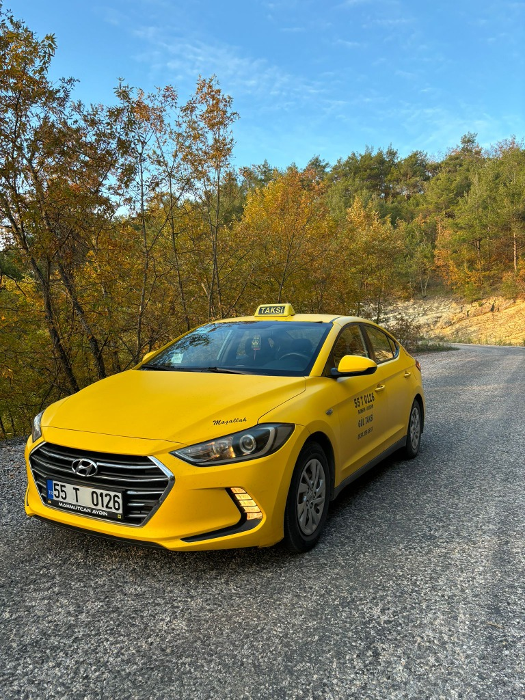
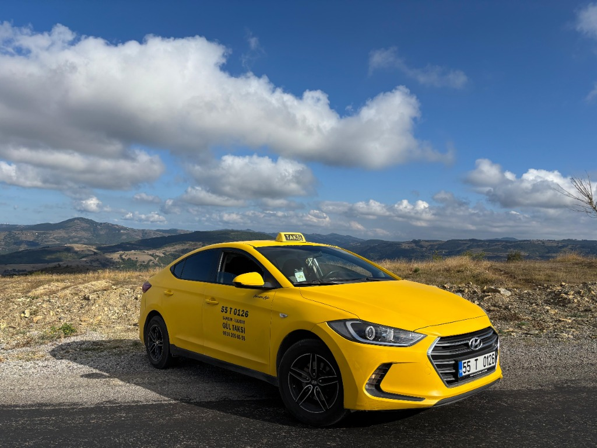
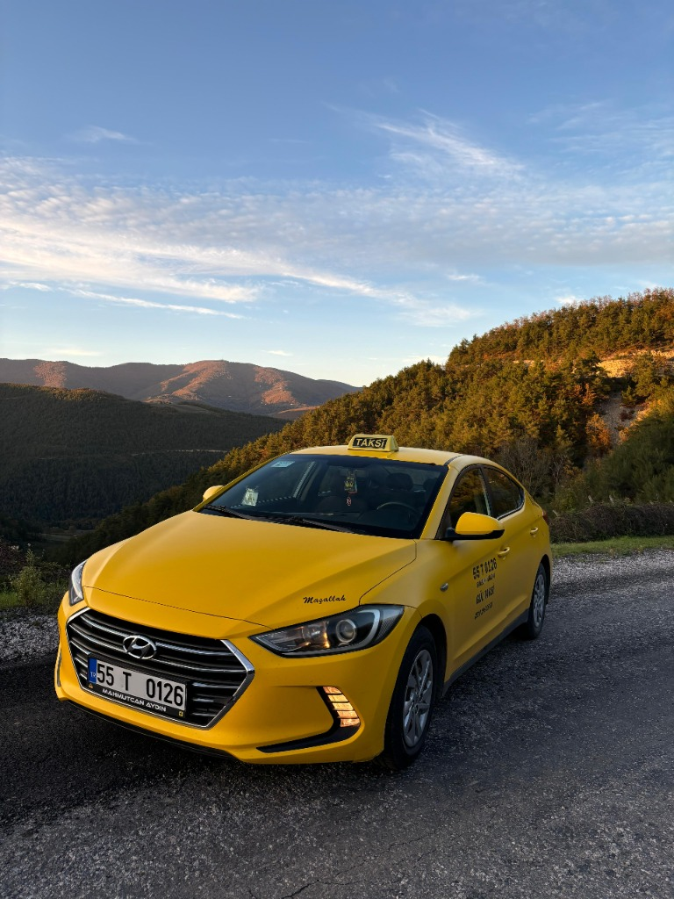

İhtiyacınıza özel profesyonel taksi çözümleri sunuyoruz.

Samsun'un her noktasına en kısa sürede, konforlu ve güvenli ulaşım hizmeti sunuyoruz. İlkadım, Atakum, Canik ve tüm ilçelerde hızlı taksi hizmeti için yanınızdayız.
Trafik yoğunluğunu göz önünde bulundurarak alternatif rotalar kullanır, sizi en hızlı şekilde hedeflenize ulaştırırız.

Samsun Çarşamba Havalimanı'na gidiş ve dönüş transferleriniz için güvenilir ve konforlu çözüm sunuyoruz. Uçuş saatinize göre planlama yaparak sizi tam vaktinde havalimanına ulaştırırız.
Bagaj taşıma konusunda yardımcı olur, konforlu araçlarımızla stressiz bir yolculuk sağlarız.

Samsun dışına çıkmanız mı gerekiyor? Uzun yol deneyimi olan şoförlerimiz ve konforlu araçlarımızla şehirler arası yolculuklarınızda yanınızdayız.
Ordu, Trabzon, Amasya, Tokat ve daha birçok şehre güvenli ve konforlu yolculuk imkanı sunuyoruz. Uzun yolda VIP konforunda seyahat edin.
İhtiyacınız ne olursa olsun, bir telefon kadar yakınız. Hemen arayın!